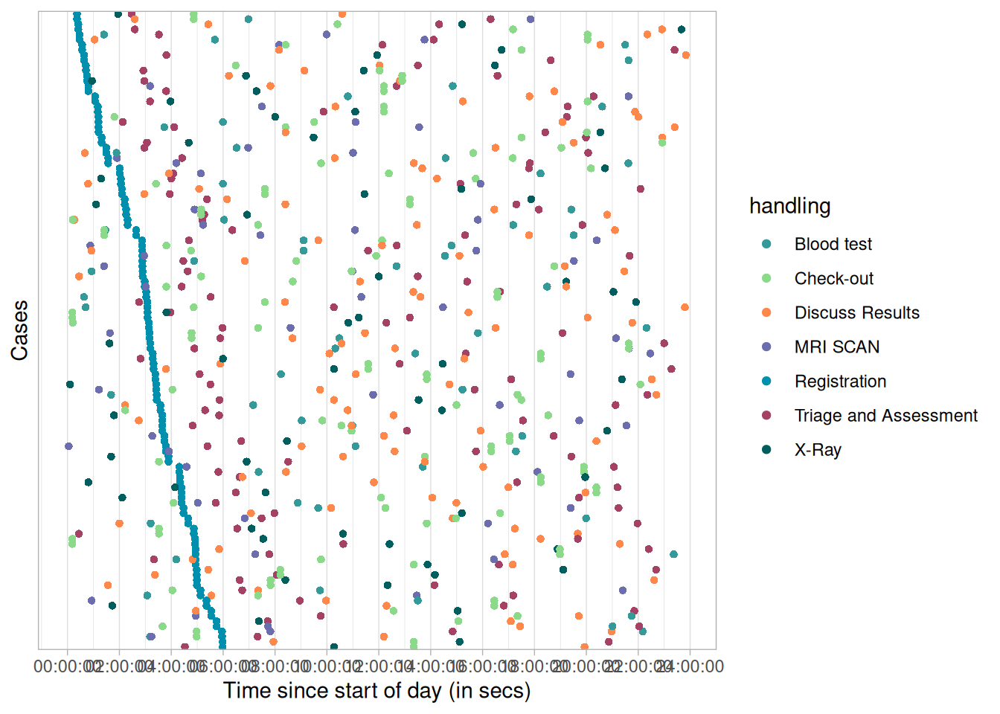
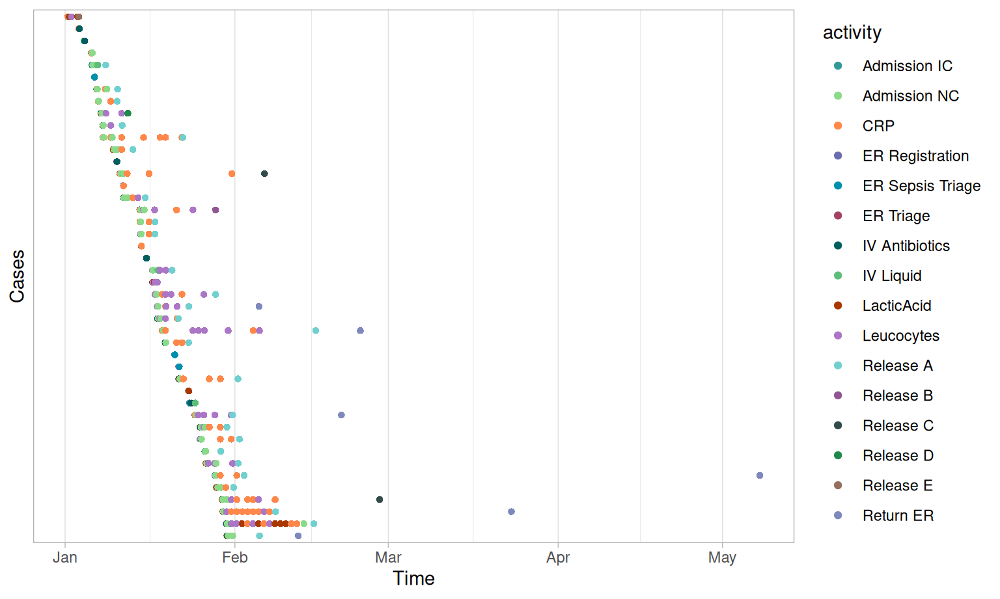
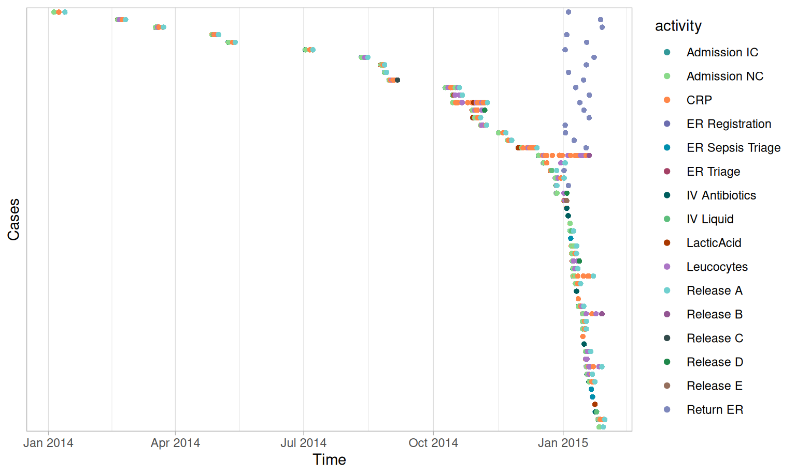
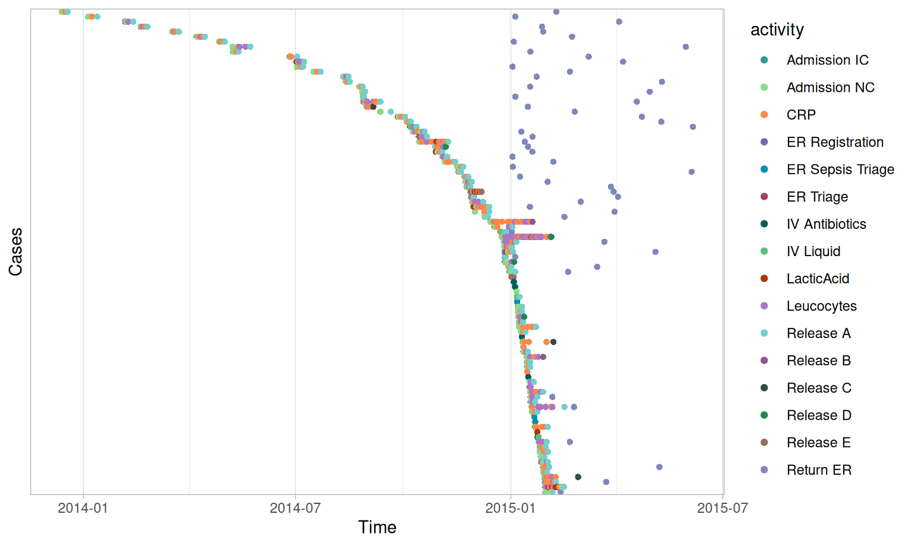

bupaR Docs | Filter case

Case filters
library(bupaverse)Activity presence
Usefilter_activity_presence() to select cases that
contain a specific activity, for instance an X-Ray scan. The function
returns a log object. For the illustration purposes traces() is also used.
patients %>%
filter_activity_presence("X-Ray") %>%
traces()## # A tibble: 3 × 3
## trace absol…¹ relat…²
## <chr> <int> <dbl>
## 1 Registration,Triage and Assessment,X-Ray,Discuss Results,Chec… 258 0.989
## 2 Registration,Triage and Assessment,X-Ray 2 0.00766
## 3 Registration,Triage and Assessment,X-Ray,Discuss Results 1 0.00383
## # … with abbreviated variable names ¹absolute_frequency, ²relative_frequencyOr that don’t have a specific activity, using
reserve = TRUE.
patients %>%
filter_activity_presence("X-Ray", reverse = TRUE) %>%
traces()## # A tibble: 4 × 3
## trace absol…¹ relat…²
## <chr> <int> <dbl>
## 1 Registration,Triage and Assessment,Blood test,MRI SCAN,Discus… 234 0.979
## 2 Registration,Triage and Assessment,Blood test,MRI SCAN,Discus… 2 0.00837
## 3 Registration,Triage and Assessment 2 0.00837
## 4 Registration,Triage and Assessment,Blood test 1 0.00418
## # … with abbreviated variable names ¹absolute_frequency, ²relative_frequencyWe can also specify more than one activity. In this case, the
method argument can be configured as follows:
- “all” means that all the specified activity labels must be present for a case to be selected.
- “none” means that they are not allowed to be present.
- “one_of” means that at least one of them must be present.
- “exact” means that all of these activities have to be present (although multiple times and in random orderings), while no others are allowed.
- “only” means that only (a set of) these activities are allowed to be present, and no others.
traffic_fines. Note that the unfiltered dataset has 44
distinct traces.
All
27 traces have both activities.
traffic_fines %>%
filter_activity_presence(c("Create Fine", "Payment"), method = "all") %>%
traces()## Warning in filter_activity_presence(., c("Create Fine", "Payment"), method = "all"): 2 specified activities in `activities` not found in `log`.
## ! Activities not found and ignored: "Create Fine" and "Payment".## [1] trace absolute_frequency relative_frequency
## <0 rows> (or 0-length row.names)None
No traces exist that have none of these activities.
traffic_fines %>%
filter_activity_presence(c("Create Fine", "Payment"), method = "none") %>%
traces()## Warning in filter_activity_presence(., c("Create Fine", "Payment"), method = "none"): 2 specified activities in `activities` not found in `log`.
## ! Activities not found and ignored: "Create Fine" and "Payment".## [1] trace absolute_frequency relative_frequency
## <0 rows> (or 0-length row.names)One of
All 44 traces have at least one of these activities.
traffic_fines %>%
filter_activity_presence(c("Create Fine", "Payment"), method = "one_of") %>%
traces()## Warning in filter_activity_presence(., c("Create Fine", "Payment"), method = "one_of"): 2 specified activities in `activities` not found in `log`.
## ! Activities not found and ignored: "Create Fine" and "Payment".## [1] trace absolute_frequency relative_frequency
## <0 rows> (or 0-length row.names)Exact
Only 2 traces consist of exactly these activities.
traffic_fines %>%
filter_activity_presence(c("Create Fine", "Payment"), method = "exact") %>%
traces()## Warning in filter_activity_presence(., c("Create Fine", "Payment"), method = "exact"): 2 specified activities in `activities` not found in `log`.
## ! Activities not found and ignored: "Create Fine" and "Payment".## [1] trace absolute_frequency relative_frequency
## <0 rows> (or 0-length row.names)Only
And the same 2 traces have only these activities.
traffic_fines %>%
filter_activity_presence(c("Create Fine", "Payment"), method = "only") %>%
traces()## Warning in filter_activity_presence(., c("Create Fine", "Payment"), method = "only"): 2 specified activities in `activities` not found in `log`.
## ! Activities not found and ignored: "Create Fine" and "Payment".## [1] trace absolute_frequency relative_frequency
## <0 rows> (or 0-length row.names)Note that when one of the specified activities cannot be found in the
log, you will get a warning about this. However,
filter_activity_presence() will proceed with the specified
list in any case. The result below shows that no trace has the activity
“Create Fines”.
traffic_fines %>%
filter_activity_presence(c("Create Fines"), method = "none") %>%
traces()## Warning in filter_activity_presence(., c("Create Fines"), method = "none"): 1 specified activity in `activities` not found in `log`.
## ! Activity not found and ignored: "Create Fines".## [1] trace absolute_frequency relative_frequency
## <0 rows> (or 0-length row.names)Case
filter_case() can be used to filter cases based on their
identifier. It returns the same log object containing
events with the specified cases.
traffic_fines %>%
filter_case(cases = c("A1","A2"))## EMPTY EVENT LOG
## # A tibble: 0 × 18
## # … with 18 variables: case_id <chr>, activity <fct>, lifecycle <fct>,
## # resource <fct>, timestamp <dttm>, amount <chr>, article <dbl>,
## # dismissal <chr>, expense <chr>, lastsent <chr>, matricola <dbl>,
## # notificationtype <chr>, paymentamount <dbl>, points <dbl>,
## # totalpaymentamount <chr>, vehicleclass <chr>, activity_instance_id <chr>,
## # .order <int>The selection can be reversed with reverse = TRUE.
traffic_fines %>%
filter_case(cases = c("A1","A2"), reverse = TRUE)## # Log of 34724 events consisting of:
## 4 traces
## 4 cases
## 34724 instances of 2 activities
## 16 resources
## Events occurred from 2006-06-17 until 2012-03-26
##
## # Variables were mapped as follows:
## Case identifier: vehicleclass
## Activity identifier: notificationtype
## Resource identifier: resource
## Activity instance identifier: activity_instance_id
## Timestamp: timestamp
## Lifecycle transition: lifecycle
##
## # A tibble: 34,724 × 18
## case_id activity lifec…¹ resou…² timestamp amount article dismi…³
## <chr> <fct> <fct> <fct> <dttm> <chr> <dbl> <chr>
## 1 A1 Create Fi… comple… 561 2006-07-24 00:00:00 35.0 157 NIL
## 2 A1 Send Fine comple… <NA> 2006-12-05 00:00:00 <NA> NA <NA>
## 3 A100 Create Fi… comple… 561 2006-08-02 00:00:00 35.0 157 NIL
## 4 A100 Send Fine comple… <NA> 2006-12-12 00:00:00 <NA> NA <NA>
## 5 A100 Insert Fi… comple… <NA> 2007-01-15 00:00:00 <NA> NA <NA>
## 6 A100 Add penal… comple… <NA> 2007-03-16 00:00:00 71.5 NA <NA>
## 7 A100 Send for … comple… <NA> 2009-03-30 00:00:00 <NA> NA <NA>
## 8 A10000 Create Fi… comple… 561 2007-03-09 00:00:00 36.0 157 NIL
## 9 A10000 Send Fine comple… <NA> 2007-07-17 00:00:00 <NA> NA <NA>
## 10 A10000 Insert Fi… comple… <NA> 2007-08-02 00:00:00 <NA> NA <NA>
## # … with 34,714 more rows, 10 more variables: expense <chr>, lastsent <chr>,
## # matricola <dbl>, notificationtype <chr>, paymentamount <dbl>, points <dbl>,
## # totalpaymentamount <chr>, vehicleclass <chr>, activity_instance_id <chr>,
## # .order <int>, and abbreviated variable names ¹lifecycle, ²resource,
## # ³dismissalCase Condition
filter_case_condition() can be used to select cases for
which a condition holds. This condition can be related to any of the
variables in the log.
For example, select all cases where resource 561 is involved.
traffic_fines %>%
filter_case_condition(resource == 561)## # Log of 10000 events consisting of:
## 3 traces
## 3 cases
## 10000 instances of 1 activity
## 14 resources
## Events occurred from 2006-06-17 until 2009-03-14
##
## # Variables were mapped as follows:
## Case identifier: vehicleclass
## Activity identifier: notificationtype
## Resource identifier: resource
## Activity instance identifier: activity_instance_id
## Timestamp: timestamp
## Lifecycle transition: lifecycle
##
## # A tibble: 10,000 × 18
## case_id activity lifec…¹ resou…² timestamp amount article dismi…³
## <chr> <fct> <fct> <fct> <dttm> <chr> <dbl> <chr>
## 1 A1 Create Fi… comple… 561 2006-07-24 00:00:00 35.0 157 NIL
## 2 A100 Create Fi… comple… 561 2006-08-02 00:00:00 35.0 157 NIL
## 3 A10000 Create Fi… comple… 561 2007-03-09 00:00:00 36.0 157 NIL
## 4 A10001 Create Fi… comple… 537 2007-03-19 00:00:00 36.0 157 NIL
## 5 A10004 Create Fi… comple… 537 2007-03-20 00:00:00 36.0 157 NIL
## 6 A10005 Create Fi… comple… 537 2007-03-20 00:00:00 36.0 157 NIL
## 7 A10007 Create Fi… comple… 537 2007-03-20 00:00:00 36.0 157 NIL
## 8 A10008 Create Fi… comple… 537 2007-03-20 00:00:00 36.0 157 NIL
## 9 A10009 Create Fi… comple… 537 2007-03-20 00:00:00 22.0 7 NIL
## 10 A1001 Create Fi… comple… 550 2006-08-02 00:00:00 21.0 7 NIL
## # … with 9,990 more rows, 10 more variables: expense <chr>, lastsent <chr>,
## # matricola <dbl>, notificationtype <chr>, paymentamount <dbl>, points <dbl>,
## # totalpaymentamount <chr>, vehicleclass <chr>, activity_instance_id <chr>,
## # .order <int>, and abbreviated variable names ¹lifecycle, ²resource,
## # ³dismissalNote that multiple conditions can be combined using the symbols
| (or) and & (and). For example, let’s
select all cases where resource 557 is involved, and the
points are more than 0.
traffic_fines %>%
filter_case_condition(resource == 557 & points > 0)## # Log of 9973 events consisting of:
## 1 trace
## 1 case
## 9973 instances of 1 activity
## 14 resources
## Events occurred from 2006-06-17 until 2009-03-14
##
## # Variables were mapped as follows:
## Case identifier: vehicleclass
## Activity identifier: notificationtype
## Resource identifier: resource
## Activity instance identifier: activity_instance_id
## Timestamp: timestamp
## Lifecycle transition: lifecycle
##
## # A tibble: 9,973 × 18
## case_id activity lifec…¹ resou…² timestamp amount article dismi…³
## <chr> <fct> <fct> <fct> <dttm> <chr> <dbl> <chr>
## 1 A1 Create Fi… comple… 561 2006-07-24 00:00:00 35.0 157 NIL
## 2 A100 Create Fi… comple… 561 2006-08-02 00:00:00 35.0 157 NIL
## 3 A10000 Create Fi… comple… 561 2007-03-09 00:00:00 36.0 157 NIL
## 4 A10001 Create Fi… comple… 537 2007-03-19 00:00:00 36.0 157 NIL
## 5 A10004 Create Fi… comple… 537 2007-03-20 00:00:00 36.0 157 NIL
## 6 A10005 Create Fi… comple… 537 2007-03-20 00:00:00 36.0 157 NIL
## 7 A10007 Create Fi… comple… 537 2007-03-20 00:00:00 36.0 157 NIL
## 8 A10008 Create Fi… comple… 537 2007-03-20 00:00:00 36.0 157 NIL
## 9 A10009 Create Fi… comple… 537 2007-03-20 00:00:00 22.0 7 NIL
## 10 A1001 Create Fi… comple… 550 2006-08-02 00:00:00 21.0 7 NIL
## # … with 9,963 more rows, 10 more variables: expense <chr>, lastsent <chr>,
## # matricola <dbl>, notificationtype <chr>, paymentamount <dbl>, points <dbl>,
## # totalpaymentamount <chr>, vehicleclass <chr>, activity_instance_id <chr>,
## # .order <int>, and abbreviated variable names ¹lifecycle, ²resource,
## # ³dismissalConditions can be reversed using ! or the
reverse = TRUE argument. The following to commands are
equivalent.
traffic_fines %>%
filter_case_condition(!(resource == 557 & points > 0))## # Log of 34724 events consisting of:
## 4 traces
## 4 cases
## 34724 instances of 2 activities
## 16 resources
## Events occurred from 2006-06-17 until 2012-03-26
##
## # Variables were mapped as follows:
## Case identifier: vehicleclass
## Activity identifier: notificationtype
## Resource identifier: resource
## Activity instance identifier: activity_instance_id
## Timestamp: timestamp
## Lifecycle transition: lifecycle
##
## # A tibble: 34,724 × 18
## case_id activity lifec…¹ resou…² timestamp amount article dismi…³
## <chr> <fct> <fct> <fct> <dttm> <chr> <dbl> <chr>
## 1 A1 Create Fi… comple… 561 2006-07-24 00:00:00 35.0 157 NIL
## 2 A1 Send Fine comple… <NA> 2006-12-05 00:00:00 <NA> NA <NA>
## 3 A100 Create Fi… comple… 561 2006-08-02 00:00:00 35.0 157 NIL
## 4 A100 Send Fine comple… <NA> 2006-12-12 00:00:00 <NA> NA <NA>
## 5 A100 Insert Fi… comple… <NA> 2007-01-15 00:00:00 <NA> NA <NA>
## 6 A100 Add penal… comple… <NA> 2007-03-16 00:00:00 71.5 NA <NA>
## 7 A100 Send for … comple… <NA> 2009-03-30 00:00:00 <NA> NA <NA>
## 8 A10000 Create Fi… comple… 561 2007-03-09 00:00:00 36.0 157 NIL
## 9 A10000 Send Fine comple… <NA> 2007-07-17 00:00:00 <NA> NA <NA>
## 10 A10000 Insert Fi… comple… <NA> 2007-08-02 00:00:00 <NA> NA <NA>
## # … with 34,714 more rows, 10 more variables: expense <chr>, lastsent <chr>,
## # matricola <dbl>, notificationtype <chr>, paymentamount <dbl>, points <dbl>,
## # totalpaymentamount <chr>, vehicleclass <chr>, activity_instance_id <chr>,
## # .order <int>, and abbreviated variable names ¹lifecycle, ²resource,
## # ³dismissaltraffic_fines %>%
filter_case_condition(resource == 557 & points > 0, reverse = TRUE)## # Log of 24751 events consisting of:
## 3 traces
## 3 cases
## 24751 instances of 2 activities
## 13 resources
## Events occurred from 2006-07-27 until 2012-03-26
##
## # Variables were mapped as follows:
## Case identifier: vehicleclass
## Activity identifier: notificationtype
## Resource identifier: resource
## Activity instance identifier: activity_instance_id
## Timestamp: timestamp
## Lifecycle transition: lifecycle
##
## # A tibble: 24,751 × 18
## case_id activity lifec…¹ resou…² timestamp amount article dismi…³
## <chr> <fct> <fct> <fct> <dttm> <chr> <dbl> <chr>
## 1 A1 Send Fine comple… <NA> 2006-12-05 00:00:00 <NA> NA <NA>
## 2 A100 Send Fine comple… <NA> 2006-12-12 00:00:00 <NA> NA <NA>
## 3 A100 Insert Fi… comple… <NA> 2007-01-15 00:00:00 <NA> NA <NA>
## 4 A100 Add penal… comple… <NA> 2007-03-16 00:00:00 71.5 NA <NA>
## 5 A100 Send for … comple… <NA> 2009-03-30 00:00:00 <NA> NA <NA>
## 6 A10000 Send Fine comple… <NA> 2007-07-17 00:00:00 <NA> NA <NA>
## 7 A10000 Insert Fi… comple… <NA> 2007-08-02 00:00:00 <NA> NA <NA>
## 8 A10000 Add penal… comple… <NA> 2007-10-01 00:00:00 74.0 NA <NA>
## 9 A10000 Payment comple… <NA> 2008-09-09 00:00:00 <NA> NA <NA>
## 10 A10001 Send Fine comple… <NA> 2007-07-17 00:00:00 <NA> NA <NA>
## # … with 24,741 more rows, 10 more variables: expense <chr>, lastsent <chr>,
## # matricola <dbl>, notificationtype <chr>, paymentamount <dbl>, points <dbl>,
## # totalpaymentamount <chr>, vehicleclass <chr>, activity_instance_id <chr>,
## # .order <int>, and abbreviated variable names ¹lifecycle, ²resource,
## # ³dismissalEndpoints
filter_endpoints() allows to select cases with a
specific start and/or end activity. In case of the patients
data set, all cases start with “Registration”. Filtering cases that
don’t start with Registration
(reverse = TRUE) gives an empty log.
patients %>%
filter_endpoints(start_activities = "Registration", reverse = TRUE)## EMPTY EVENT LOG
## # A tibble: 0 × 7
## # … with 7 variables: handling <fct>, patient <chr>, employee <fct>,
## # handling_id <chr>, registration_type <fct>, time <dttm>, .order <int>If we are interested to see the “completed” cases, those that start
with Registration and end we “Check-out”, we can apply the following
filter. Here process_map() is used for
the illustration purposes.
patients %>%
filter_endpoints(start_activities = "Registration", end_activities = "Check-out") %>%
process_map()Endpoints Condition
filter_endpoints_condition() allows to select cases by
applying conditions to the start and/or end activity instance. For
example. We can use it to replace the filter_endpoints()
from above, using conditions on the handling variable.
patients %>%
filter_endpoints_condition(start_condition = handling == "Registration", end_condition = handling == "Check-out")## # Log of 5388 events consisting of:
## 2 traces
## 492 cases
## 2694 instances of 7 activities
## 7 resources
## Events occurred from 2017-01-02 11:41:53 until 2018-05-03 03:34:55
##
## # Variables were mapped as follows:
## Case identifier: patient
## Activity identifier: handling
## Resource identifier: employee
## Activity instance identifier: handling_id
## Timestamp: time
## Lifecycle transition: registration_type
##
## # A tibble: 5,388 × 7
## handling patient employee handling_id regist…¹ time .order
## <fct> <chr> <fct> <chr> <fct> <dttm> <int>
## 1 Registration 1 r1 1 start 2017-01-02 11:41:53 1
## 2 Registration 2 r1 2 start 2017-01-02 11:41:53 2
## 3 Registration 3 r1 3 start 2017-01-04 01:34:05 3
## 4 Registration 4 r1 4 start 2017-01-04 01:34:04 4
## 5 Registration 5 r1 5 start 2017-01-04 16:07:47 5
## 6 Registration 6 r1 6 start 2017-01-04 16:07:47 6
## 7 Registration 7 r1 7 start 2017-01-05 04:56:11 7
## 8 Registration 8 r1 8 start 2017-01-05 04:56:11 8
## 9 Registration 9 r1 9 start 2017-01-06 05:58:54 9
## 10 Registration 10 r1 10 start 2017-01-06 05:58:54 10
## # … with 5,378 more rows, and abbreviated variable name ¹registration_typeNaturally, both conditions can use any of the available variables.
The following selects all cases that started between midnight and 6am.
Note that no condition is applied on the end activity instance using the
end_condition = TRUE specification. We use dotted_chart("relative_day")
to plot a graph where, each activity instance is displayed with a dot.
The x-axis refers to the time aspect (here a relative
time difference since the first case on x-axis), while the y-axis refers
to cases.
patients %>%
filter_endpoints_condition(start_condition = lubridate::hour(time) < 6, end_condition = TRUE) %>%
dotted_chart("relative_day")
Flow Time
filter_flow_time() can be used to select cases in which
a specific directly-follows flow (from > to) happens within a
specific time duration interval.
For example, we can select the fines from traffic_fines
in which the creation is followed by the payment within 4 weeks.
traffic_fines %>%
filter_flow_time(from = "Create Fine", to = "Payment", interval = c(0,4), units = "weeks")## EMPTY EVENT LOG
## # A tibble: 0 × 18
## # … with 18 variables: case_id <chr>, activity <fct>, lifecycle <fct>,
## # resource <fct>, timestamp <dttm>, amount <chr>, article <dbl>,
## # dismissal <chr>, expense <chr>, lastsent <chr>, matricola <dbl>,
## # notificationtype <chr>, paymentamount <dbl>, points <dbl>,
## # totalpaymentamount <chr>, vehicleclass <chr>, activity_instance_id <chr>,
## # .order <int>The interval can be defined as half-open using
NA for the first or second element. Below select cases
where payment is followed after 4 weeks.
traffic_fines %>%
filter_flow_time(from = "Create Fine", to = "Payment", interval = c(4, NA), units = "weeks")## EMPTY EVENT LOG
## # A tibble: 0 × 18
## # … with 18 variables: case_id <chr>, activity <fct>, lifecycle <fct>,
## # resource <fct>, timestamp <dttm>, amount <chr>, article <dbl>,
## # dismissal <chr>, expense <chr>, lastsent <chr>, matricola <dbl>,
## # notificationtype <chr>, paymentamount <dbl>, points <dbl>,
## # totalpaymentamount <chr>, vehicleclass <chr>, activity_instance_id <chr>,
## # .order <int>Note that we can also use reverse = TRUE. However, this
will also include cases where Create Fine is
not followed by Payment at all. Therefore, the
following filter is not equivalent to the previous one.
traffic_fines %>%
filter_flow_time(from = "Create Fine", to = "Payment", interval = c(0, 4), units = "weeks", reverse = TRUE)## EMPTY EVENT LOG
## # A tibble: 0 × 18
## # … with 18 variables: case_id <chr>, activity <fct>, lifecycle <fct>,
## # resource <fct>, timestamp <dttm>, amount <chr>, article <dbl>,
## # dismissal <chr>, expense <chr>, lastsent <chr>, matricola <dbl>,
## # notificationtype <chr>, paymentamount <dbl>, points <dbl>,
## # totalpaymentamount <chr>, vehicleclass <chr>, activity_instance_id <chr>,
## # .order <int>Idle Time
The idle time is the total time period during the execution of a case
where no activity instances are active. An activity instance is
considered active between the registration of the first related
event and the last related event. See more on performance metrics here.
filter_idle_time() can be used to select cases based on the
amount of idle time. There are two approaches: using an interval, or
using a percentage.
Interval-based
Using filter_idle_time() with argument
interval, you can select cases of which the idle time falls
within a certain duration of time. For example, all the cases of
patients with an idle time from 10 to 20 hours. Note that it is
mandatory to set the appropriate time unit using units for
the interval to be as you intend it. The default time unit is
seconds.
patients %>%
filter_idle_time(interval = c(10,20), units = "hours") %>%
idle_time(unit = "hours")## # A tibble: 1 × 8
## min q1 median mean q3 max st_dev iqr
## <drtn> <drtn> <drtn> <drtn> <drt> <drt> <dbl> <drt>
## 1 14.985 hours 15.04604 hours 16.57764 hours 16.94937 … 18.4… 19.6… 2.31 3.43…Also here you can use half-open intervals.
patients %>%
filter_idle_time(interval = c(10,NA), units = "hours") %>%
idle_time(unit = "hours")## # A tibble: 1 × 8
## min q1 median mean q3 max st_dev iqr
## <drtn> <drtn> <drtn> <drtn> <drt> <drt> <dbl> <drt>
## 1 14.985 hours 76.89194 hours 119.4028 hours 132.4819 … 178.… 525.… 76.9 101.…And use reverse = TRUE.
patients %>%
filter_idle_time(interval = c(NA,40), units = "hours", reverse = TRUE) %>%
idle_time(unit = "hours")## # A tibble: 1 × 8
## min q1 median mean q3 max st_dev iqr
## <drtn> <drtn> <drtn> <drtn> <drt> <drt> <dbl> <drt>
## 1 40.88944 hours 82.61833 hours 125.6967 hours 141.146… 183.… 525.… 73.8 101.…Percentage-based
Using filter_idle_time() with argument
percentage, you can give priority to cases with the lowest
idle time. For example, setting percentage = 0.5 will
select 50% of the cases, starting with those that have the lowest idle
time.
patients %>%
filter_idle_time(percentage = 0.5) %>%
idle_time(unit = "hours")## # A tibble: 1 × 8
## min q1 median mean q3 max st_dev iqr
## <drtn> <drtn> <drtn> <drtn> <drt> <drt> <dbl> <drt>
## 1 14.985 hours 54.60326 hours 76.80444 hours 72.66841 … 93.9… 119.… 26.5 39.3…You can again set reverse = TRUE if you instead want 50%
of the cases with the highest idle time.
patients %>%
filter_idle_time(percentage = 0.5, reverse = TRUE) %>%
idle_time(unit = "hours")## # A tibble: 1 × 8
## min q1 median mean q3 max st_dev iqr
## <drtn> <drtn> <drtn> <drtn> <drt> <drt> <dbl> <drt>
## 1 119.42 hours 146.6698 hours 178.2143 hours 192.2954 … 217.… 525.… 62.9 70.8…Note that it is not necessary to specify the time units when using the percentage approach.
Note that for both approaches, calculations using idle time assume non-atomic activity instances, i.e. activity instances that have more than one event. If each activity instance has only one registered event, the idle time will be equal to the throughput time. See more on performance metrics here. It is however possible that some activities instances have multiple events, while others have not. In those cases, idle time will take these active activity instances into account, and the resulting time will be less than the throughput time.
Infrequent Flows
filter_infrequent_flows() allows us to select a set of
cases in which every directly-follows flow has a minimum frequency. For
example, consider the traffic_fines process
map below.
traffic_fines %>% process_map()In this map, we can observe several unique directly follows relations, as well as flows occurring only 2 or 3 times. Using the filter, we can remove the cases that lead to these flows as follows:
traffic_fines %>%
filter_infrequent_flows(min_n = 5) %>%
process_map()We can immediately observe less very infrequent flows in the process map.
It is important to note that filter_infrequent_flows()
does not remove edges from the process map, but entire
cases underlying infrequent behavior. We strongly adhere to the
principal that the process map should be a based on a clearly defined
set of events, which are either the result of case filters, or specific
event filters (see Event Filters).
Removing specific edges from a process map requires removing specific
activity instances from the log, which not necessarily removing other
activity instances of the same activity type. This would result in an
ambiguous map which could give a misleading view on your process.
Precedence
The filter_precedence() allows us to filter cases based
on flows between activities, using 5 different inputs:
- A list of (one or more) possible
antecedentactivities (“source”-activities) - A list of (one or more) possible
consequentactivities (“target”-activities) - A
precedence_type- “directly_follows”
- “eventually_follows”
- A
filter_method: “all”, “one_of” or “none” of the precedence rules should hold. - A
reverseargument
If there is more than one antecedent or
consequent activity, the filter will test
all possible pairs. The filter_method will
tell the filter whether all of the rules should hold, at least one, or
none are allowed.
For example, take the patients data. The following
filter takes only cases where Triage and Assessment is directly
followed by Blood test.
patients %>%
filter_precedence(antecedents = "Triage and Assessment",
consequents = "Blood test",
precedence_type = "directly_follows") %>%
traces()## # A tibble: 3 × 3
## trace absol…¹ relat…²
## <chr> <int> <dbl>
## 1 Registration,Triage and Assessment,Blood test,MRI SCAN,Discus… 234 0.987
## 2 Registration,Triage and Assessment,Blood test,MRI SCAN,Discus… 2 0.00844
## 3 Registration,Triage and Assessment,Blood test 1 0.00422
## # … with abbreviated variable names ¹absolute_frequency, ²relative_frequencyThe following selects cases where Triage and Assessment is eventually followed by both Blood test and X-Ray, which never happens.
patients %>%
filter_precedence(antecedents = "Triage and Assessment",
consequents = c("Blood test", "X-Ray"),
precedence_type = "eventually_follows",
filter_method = "all") %>%
traces()## [1] trace absolute_frequency relative_frequency
## <0 rows> (or 0-length row.names)The next filter selects cases where Triage and Assessement is eventually followed by at least one of the three antecedents, by changing the filter method to one_of.
patients %>%
filter_precedence(antecedents = "Triage and Assessment",
consequents = c("Blood test", "X-Ray", "MRI SCAN"),
precedence_type = "eventually_follows",
filter_method = "one_of") %>%
traces()## # A tibble: 6 × 3
## trace absol…¹ relat…²
## <chr> <int> <dbl>
## 1 Registration,Triage and Assessment,X-Ray,Discuss Results,Chec… 258 0.518
## 2 Registration,Triage and Assessment,Blood test,MRI SCAN,Discus… 234 0.470
## 3 Registration,Triage and Assessment,Blood test,MRI SCAN,Discus… 2 0.00402
## 4 Registration,Triage and Assessment,X-Ray 2 0.00402
## 5 Registration,Triage and Assessment,X-Ray,Discuss Results 1 0.00201
## 6 Registration,Triage and Assessment,Blood test 1 0.00201
## # … with abbreviated variable names ¹absolute_frequency, ²relative_frequencyThis final example only retains cases where Triage and Assessment is not followed by any of the three consequent activities. The result is 2 incomplete cases where the last activity was Triage and Assessment.
patients %>%
filter_precedence(antecedents = "Triage and Assessment",
consequents = c("Blood test", "X-Ray", "MRI SCAN"),
precedence_type = "eventually_follows",
filter_method = "none") %>%
traces()## # A tibble: 1 × 3
## trace absolute_frequency relative_frequency
## <chr> <int> <dbl>
## 1 Registration,Triage and Assessment 2 1As always, the filter can be negated with
reverse = TRUE.
Precedence Condition
filter_precedence_condition() is a generic version of
filter_precendence(), where the antecedent(s) and
consequent(s) are conditions instead of activity labels. This filter can
only test for one pair at a time, thus not having a
filter_method. The precedence_type can again
be configured.
The following examples takes all cases from
traffic_fines where an activity instance with
dismissal equal to NIL is eventually followed by an
activity instance with notificationtype equal to
P.
traffic_fines %>%
filter_precedence_condition(antecedent_condition = dismissal == "NIL",
consequent_condition = notificationtype == "P",
precedence_type = "eventually_follows")## EMPTY EVENT LOG
## # A tibble: 0 × 20
## # … with 20 variables: case_id <chr>, activity <fct>, lifecycle <fct>,
## # resource <fct>, timestamp <dttm>, amount <chr>, article <dbl>,
## # dismissal <chr>, expense <chr>, lastsent <chr>, matricola <dbl>,
## # notificationtype <chr>, paymentamount <dbl>, points <dbl>,
## # totalpaymentamount <chr>, vehicleclass <chr>, activity_instance_id <chr>,
## # .order <int>, ANTECEDENT_CONDITION <lgl>, CONSEQUENT_CONDITION <lgl>Precedence Resource
filter_precedence_resource() is similar to
filter_precedence(), but additionally requires that the
resources of both executions are equal. While there are three traces
that adhere to the following antecedence-consequent directly-follows
pair (see earlier), there is not a single case where the two activities
are executed by the same resource, returning an empty log. (In fact, all
activity types in patients are linked to a distinct resource in a
one-to-one relationship.)
patients %>%
filter_precedence_resource(antecedents = "Triage and Assessment",
consequents = "Blood test",
precedence_type = "directly_follows") %>%
traces()## [1] trace absolute_frequency relative_frequency
## <0 rows> (or 0-length row.names)Processing Time
The processing time is the total time period during the execution of a case where an activity instance is active. An activity instance is considered active between the registration of the first related event and the last related event. See more on performance metrics here.
filter_processing_time() can be used to select cases
based on the amount of processing time. There are two approaches: using
an interval, or using a percentage.
Interval-based
Using filter_processing_time() with argument
interval, you can select cases of which the processing time
falls within a certain duration of time. For example, all the cases of
patients with an processing time from 10 to 20 hours. Note that it is
mandatory to set the appropriate time unit using units for
the interval to be as you intend it. The default time unit is
seconds.
patients %>%
filter_processing_time(interval = c(10,20), units = "hours") %>%
processing_time(unit = "hours")## # A tibble: 1 × 8
## min q1 median mean q3 max st_dev iqr
## <drtn> <drtn> <drtn> <drtn> <drt> <drt> <dbl> <drt>
## 1 10.71778 hours 18.55097 hours 19.19833 hours 18.1397… 19.3… 19.9… 2.59 0.77…Also here you can use half-open intervals.
patients %>%
filter_processing_time(interval = c(10,NA), units = "hours") %>%
processing_time(unit = "hours")## # A tibble: 1 × 8
## min q1 median mean q3 max st_dev iqr
## <drtn> <drtn> <drtn> <drtn> <drt> <drt> <dbl> <drt>
## 1 10.71778 hours 24.95 hours 27.72708 hours 27.74947 h… 30.7… 38.2… 4.17 5.78…And use reverse = TRUE.
patients %>%
filter_processing_time(interval = c(NA,20), units = "hours", reverse = TRUE) %>%
processing_time(unit = "hours")## # A tibble: 1 × 8
## min q1 median mean q3 max st_dev iqr
## <drtn> <drtn> <drtn> <drtn> <drt> <drt> <dbl> <drt>
## 1 20.06417 hours 25.16347 hours 27.87306 hours 28.0671… 30.8… 38.2… 3.83 5.64…Percentage-based
Using filter_processing_time() with argument
percentage, you can give priority to cases with the lowest
processing time. For example, setting percentage = 0.5 will
select 50% of the cases, starting with those that have the lowest
processing time.
patients %>%
filter_processing_time(percentage = 0.5) %>%
processing_time(unit = "hours")## # A tibble: 1 × 8
## min q1 median mean q3 max st_dev iqr
## <drtn> <drtn> <drtn> <drtn> <drt> <drt> <dbl> <drt>
## 1 10.71778 hours 23.04375 hours 24.945 hours 24.38761 … 26.4… 27.7… 2.66 3.37…You can again set reverse = TRUE if you instead want 50%
of the cases with the highest processing time.
patients %>%
filter_processing_time(percentage = 0.5, reverse = TRUE) %>%
processing_time(unit = "hours")## # A tibble: 1 × 8
## min q1 median mean q3 max st_dev iqr
## <drtn> <drtn> <drtn> <drtn> <drt> <drt> <dbl> <drt>
## 1 27.72722 hours 29.31014 hours 30.73694 hours 31.1113… 32.5… 38.2… 2.27 3.27…Note that it is not necessary to specify the time units when using the percentage approach.
Note that for both approaches, calculations using processing time assume non-atomic activity instances, i.e. activity instances that have more than one event. If each activity instance has only one registered event, the processing time will be zero. See more on performance metrics here. It is however possible that some activities instances have multiple events, while others have not. In those cases, processing time will take only these active activity instances into account, and the resulting time will be more than zero.
Throughput Time
The throughput time is the total time period from the first event to the last event belonging to a case. See more on performance metrics here.
filter_throughput_time() can be used to select cases
based on the amount of throughput time. There are two approaches: using
an interval, or using a percentage.
Interval-based
Using filter_throughput_time() with argument
interval, you can select cases of which the throughput time
falls within a certain duration of time. For example, all the cases of
patients with an throughput time from 1 to 5 days. Note that it is
mandatory to set the appropriate time unit using units for
the interval to be as you intend it. The default time unit is
seconds.
patients %>%
filter_throughput_time(interval = c(1,5), units = "days") %>%
throughput_time(unit = "days")## Warning: between() called on numeric vector with S3 class## # A tibble: 1 × 8
## min q1 median mean q3 max st_dev iqr
## <drtn> <drtn> <drtn> <drtn> <drt> <drt> <dbl> <drt>
## 1 1.496088 days 3.028145 days 3.772008 days 3.687445 d… 4.44… 4.99… 0.887 1.42…Also here you can use half-open intervals.
patients %>%
filter_throughput_time(interval = c(10,NA), units = "days") %>%
throughput_time(unit = "days")## Warning: between() called on numeric vector with S3 class## # A tibble: 1 × 8
## min q1 median mean q3 max st_dev iqr
## <drtn> <drtn> <drtn> <drtn> <drt> <drt> <dbl> <drt>
## 1 10.00119 days 10.61541 days 11.51726 days 12.38279 d… 13.2… 23.1… 2.59 2.60…And use reverse = TRUE.
patients %>%
filter_throughput_time(interval = c(10,NA), units = "days", reverse = TRUE) %>%
throughput_time(unit = "days")## Warning: between() called on numeric vector with S3 class## # A tibble: 1 × 8
## min q1 median mean q3 max st_dev iqr
## <drtn> <drtn> <drtn> <drtn> <drt> <drt> <dbl> <drt>
## 1 1.496088 days 4.132549 days 5.377951 days 5.716339 d… 7.58… 9.97… 2.15 3.45…Percentage-based
Using filter_throughput_time() with argument
percentage, you can give priority to cases with the lowest
throughput time. For example, setting percentage = 0.5 will
select 50% of the cases, starting with those that have the lowest
throughput time.
patients %>%
filter_throughput_time(percentage = 0.5) %>%
throughput_time(unit = "days")## # A tibble: 1 × 8
## min q1 median mean q3 max st_dev iqr
## <drtn> <drtn> <drtn> <drtn> <drt> <drt> <dbl> <drt>
## 1 1.496088 days 3.381942 days 4.31294 days 4.160352 da… 5.03… 6.07… 1.11 1.64…You can again set reverse = TRUE if you instead want 50%
of the cases with the highest throughput time.
patients %>%
filter_throughput_time(percentage = 0.5, reverse = TRUE) %>%
throughput_time(unit = "days")## # A tibble: 1 × 8
## min q1 median mean q3 max st_dev iqr
## <drtn> <drtn> <drtn> <drtn> <drt> <drt> <dbl> <drt>
## 1 6.093218 days 7.319968 days 8.589635 days 9.192264 d… 10.2… 23.1… 2.63 2.96…Note that it is not necessary to specify the time units when using the percentage approach.
Time Period
Filtering cases by time period can be done using the
filter_time_period() introduced above. There are four
different filter_method’s that act as case filters:
- “start”: all cases started in an interval.
- “complete”: all cases completed in an interval.
- “contained”: all cases contained in an interval.
- “intersecting”: all cases with some activity in an interval.
Using the same interval (the month of January 2015), you can compare the results of different filtering methods below using dotted charts.
Start
sepsis %>%
filter_time_period(interval = ymd(c(20150101, 20150131)), filter_method = "start") %>%
dotted_chart() 
Complete
sepsis %>%
filter_time_period(interval = ymd(c(20150101, 20150131)), filter_method = "complete") %>%
dotted_chart()
Contained
sepsis %>%
filter_time_period(interval = ymd(c(20150101, 20150131)), filter_method = "contained") %>%
dotted_chart()Intersecting
sepsis %>%
filter_time_period(interval = ymd(c(20150101, 20150131)), filter_method = "intersecting") %>%
dotted_chart()
Trace Frequency
The frequency of a trace, i.e. distinct activity sequence, is the
number of cases, i.e. process instances that follow this trace.
filter_trace_frequency() can be used to select cases based
on the amount of throughput time. There are two approaches: using an
interval, or using a percentage.
Interval-based
Using filter_trace_frequency() with argument
interval, you can select cases of which the trace frequency
falls within a certain frequency interval. For example, all the cases
from sepsis with a trace frequency between 10 and 50. traces() is used to show the
changes to the log data after applying the filter.
sepsis %>%
filter_trace_frequency(interval = c(10,50)) %>%
traces()## # A tibble: 5 × 3
## trace absol…¹ relat…²
## <chr> <int> <dbl>
## 1 ER Registration,ER Triage,ER Sepsis Triage 35 0.333
## 2 ER Registration,ER Triage,ER Sepsis Triage,Leucocytes,CRP 24 0.229
## 3 ER Registration,ER Triage,ER Sepsis Triage,CRP,Leucocytes 22 0.210
## 4 ER Registration,ER Triage,ER Sepsis Triage,CRP,LacticAcid,Leu… 13 0.124
## 5 ER Registration,ER Triage,ER Sepsis Triage,Leucocytes,CRP,Lac… 11 0.105
## # … with abbreviated variable names ¹absolute_frequency, ²relative_frequencyAlso here you can use half-open intervals.
sepsis %>%
filter_trace_frequency(interval = c(5,NA)) %>%
traces()## # A tibble: 11 × 3
## trace absol…¹ relat…²
## <chr> <int> <dbl>
## 1 ER Registration,ER Triage,ER Sepsis Triage 35 0.248
## 2 ER Registration,ER Triage,ER Sepsis Triage,Leucocytes,CRP 24 0.170
## 3 ER Registration,ER Triage,ER Sepsis Triage,CRP,Leucocytes 22 0.156
## 4 ER Registration,ER Triage,ER Sepsis Triage,CRP,LacticAcid,Le… 13 0.0922
## 5 ER Registration,ER Triage,ER Sepsis Triage,Leucocytes,CRP,La… 11 0.0780
## 6 ER Registration,ER Triage,ER Sepsis Triage,Leucocytes,CRP,La… 9 0.0638
## 7 ER Registration,ER Triage,ER Sepsis Triage,Leucocytes,Lactic… 7 0.0496
## 8 ER Registration,ER Triage,ER Sepsis Triage,Leucocytes,CRP,Ad… 5 0.0355
## 9 ER Registration,ER Triage,ER Sepsis Triage,LacticAcid,Leucoc… 5 0.0355
## 10 ER Registration,ER Triage,ER Sepsis Triage,CRP,Leucocytes,La… 5 0.0355
## 11 ER Registration,ER Triage,CRP,Leucocytes,ER Sepsis Triage 5 0.0355
## # … with abbreviated variable names ¹absolute_frequency, ²relative_frequencyAnd use reverse = TRUE.
sepsis %>%
filter_trace_frequency(interval = c(5,NA), reverse = TRUE) %>%
traces()## # A tibble: 835 × 3
## trace absol…¹ relat…²
## <chr> <int> <dbl>
## 1 ER Registration,ER Triage,ER Sepsis Triage,CRP,LacticAcid,Le… 4 0.00440
## 2 ER Registration,ER Triage,ER Sepsis Triage,LacticAcid,Leucoc… 4 0.00440
## 3 ER Registration,ER Triage,ER Sepsis Triage,IV Liquid,CRP,Leu… 4 0.00440
## 4 ER Registration,ER Triage,ER Sepsis Triage,CRP,Leucocytes,Ad… 4 0.00440
## 5 ER Registration,ER Triage,Leucocytes,CRP,ER Sepsis Triage 4 0.00440
## 6 ER Registration,ER Triage,ER Sepsis Triage,Leucocytes,CRP,La… 4 0.00440
## 7 ER Registration,ER Triage,ER Sepsis Triage,Leucocytes,Lactic… 4 0.00440
## 8 ER Registration,ER Triage,ER Sepsis Triage,IV Liquid,Leucocy… 3 0.00330
## 9 ER Registration,ER Triage,LacticAcid,Leucocytes,CRP,ER Sepsi… 3 0.00330
## 10 ER Registration,ER Triage,CRP,LacticAcid,Leucocytes,ER Sepsi… 3 0.00330
## # … with 825 more rows, and abbreviated variable names ¹absolute_frequency,
## # ²relative_frequencyPercentage-based
Using filter_trace_frequency() with argument
percentage, you can give priority to cases with a frequent
trace. For example, setting percentage = 0.2 will select at
least 20% of the cases, starting with those that have the highest
frequency.
sepsis %>%
filter_trace_frequency(percentage = 0.8) %>%
traces()## # A tibble: 846 × 3
## trace absol…¹ relat…²
## <chr> <int> <dbl>
## 1 ER Registration,ER Triage,ER Sepsis Triage 35 0.0333
## 2 ER Registration,ER Triage,ER Sepsis Triage,Leucocytes,CRP 24 0.0229
## 3 ER Registration,ER Triage,ER Sepsis Triage,CRP,Leucocytes 22 0.0210
## 4 ER Registration,ER Triage,ER Sepsis Triage,CRP,LacticAcid,Le… 13 0.0124
## 5 ER Registration,ER Triage,ER Sepsis Triage,Leucocytes,CRP,La… 11 0.0105
## 6 ER Registration,ER Triage,ER Sepsis Triage,Leucocytes,CRP,La… 9 0.00857
## 7 ER Registration,ER Triage,ER Sepsis Triage,Leucocytes,Lactic… 7 0.00667
## 8 ER Registration,ER Triage,ER Sepsis Triage,Leucocytes,CRP,Ad… 5 0.00476
## 9 ER Registration,ER Triage,ER Sepsis Triage,LacticAcid,Leucoc… 5 0.00476
## 10 ER Registration,ER Triage,ER Sepsis Triage,CRP,Leucocytes,La… 5 0.00476
## # … with 836 more rows, and abbreviated variable names ¹absolute_frequency,
## # ²relative_frequencyYou can again set reverse = TRUE if you instead want 80%
of the cases with the lowest frequency.
sepsis %>%
filter_trace_frequency(percentage = 0.2, reverse = TRUE) %>%
traces()## # A tibble: 784 × 3
## trace absol…¹ relat…²
## <chr> <int> <dbl>
## 1 ER Registration,ER Triage,ER Sepsis Triage,LacticAcid,Leucoc… 1 0.00128
## 2 ER Registration,ER Triage,ER Sepsis Triage,IV Antibiotics,Le… 1 0.00128
## 3 ER Registration,ER Triage,ER Sepsis Triage,CRP,Leucocytes,IV… 1 0.00128
## 4 ER Registration,ER Triage,ER Sepsis Triage,LacticAcid,Leucoc… 1 0.00128
## 5 ER Registration,IV Liquid,ER Triage,Leucocytes,CRP,LacticAci… 1 0.00128
## 6 ER Registration,ER Triage,ER Sepsis Triage,CRP,LacticAcid,Le… 1 0.00128
## 7 ER Registration,ER Triage,ER Sepsis Triage,Leucocytes,CRP,La… 1 0.00128
## 8 ER Registration,ER Triage,CRP,LacticAcid,Leucocytes,ER Sepsi… 1 0.00128
## 9 ER Registration,ER Triage,ER Sepsis Triage,Leucocytes,CRP,La… 1 0.00128
## 10 ER Registration,ER Triage,Leucocytes,CRP,LacticAcid,ER Sepsi… 1 0.00128
## # … with 774 more rows, and abbreviated variable names ¹absolute_frequency,
## # ²relative_frequencyNote that the obtained percentage of cases will not always be exactly
the specified percentage, as there can be ties. For example, in the
sepsis data set, 784 of the 1050 cases (75%) follow a
distinct activity sequence. As bupaR will not break ties
randomly, it will select all cases once the percentage set is
higher then ca. 24%, as it will include all unique cases then still
remaining in the log to get to this coverage.
Trace length
The length of a trace, i.e. distinct activity sequence, is the number of activity instances it contains. Note that this is not necessarily equal to the number of events.
filter_trace_length() can be used to select cases based
on the amount of throughput time. There are two approaches: using an
interval, or using a percentage.
Interval-based
Using filter_trace_length() with argument
interval, you can select cases of which the trace length
falls within a certain interval. For example, all the cases of sepsis
with a trace length between 10 and 50. Changes are illustrated with traces().
sepsis %>%
filter_trace_length(interval = c(10,50)) %>%
traces()## # A tibble: 703 × 3
## trace absol…¹ relat…²
## <chr> <int> <dbl>
## 1 ER Registration,ER Triage,ER Sepsis Triage,LacticAcid,Leucoc… 4 0.00540
## 2 ER Registration,ER Triage,ER Sepsis Triage,Leucocytes,CRP,La… 4 0.00540
## 3 ER Registration,ER Triage,ER Sepsis Triage,Leucocytes,Lactic… 4 0.00540
## 4 ER Registration,ER Triage,ER Sepsis Triage,IV Liquid,IV Anti… 3 0.00405
## 5 ER Registration,ER Triage,ER Sepsis Triage,Leucocytes,CRP,La… 3 0.00405
## 6 ER Registration,ER Triage,ER Sepsis Triage,CRP,LacticAcid,Le… 3 0.00405
## 7 ER Registration,ER Triage,ER Sepsis Triage,IV Liquid,Leucocy… 3 0.00405
## 8 ER Registration,ER Triage,ER Sepsis Triage,LacticAcid,Leucoc… 2 0.00270
## 9 ER Registration,ER Triage,ER Sepsis Triage,LacticAcid,CRP,Le… 2 0.00270
## 10 ER Registration,ER Triage,ER Sepsis Triage,Leucocytes,CRP,La… 2 0.00270
## # … with 693 more rows, and abbreviated variable names ¹absolute_frequency,
## # ²relative_frequencyAlso here you can use half-open intervals.
sepsis %>%
filter_trace_length(interval = c(10,NA)) %>%
traces()## # A tibble: 715 × 3
## trace absol…¹ relat…²
## <chr> <int> <dbl>
## 1 ER Registration,ER Triage,ER Sepsis Triage,LacticAcid,Leucoc… 4 0.00531
## 2 ER Registration,ER Triage,ER Sepsis Triage,Leucocytes,CRP,La… 4 0.00531
## 3 ER Registration,ER Triage,ER Sepsis Triage,Leucocytes,Lactic… 4 0.00531
## 4 ER Registration,ER Triage,ER Sepsis Triage,IV Liquid,IV Anti… 3 0.00398
## 5 ER Registration,ER Triage,ER Sepsis Triage,Leucocytes,CRP,La… 3 0.00398
## 6 ER Registration,ER Triage,ER Sepsis Triage,CRP,LacticAcid,Le… 3 0.00398
## 7 ER Registration,ER Triage,ER Sepsis Triage,IV Liquid,Leucocy… 3 0.00398
## 8 ER Registration,ER Triage,ER Sepsis Triage,LacticAcid,Leucoc… 2 0.00266
## 9 ER Registration,ER Triage,ER Sepsis Triage,LacticAcid,CRP,Le… 2 0.00266
## 10 ER Registration,ER Triage,ER Sepsis Triage,Leucocytes,CRP,La… 2 0.00266
## # … with 705 more rows, and abbreviated variable names ¹absolute_frequency,
## # ²relative_frequencyAnd use reverse = TRUE.
sepsis %>%
filter_trace_length(interval = c(10,NA), reverse = TRUE) %>%
traces()## # A tibble: 131 × 3
## trace absol…¹ relat…²
## <chr> <int> <dbl>
## 1 ER Registration,ER Triage,ER Sepsis Triage 35 0.118
## 2 ER Registration,ER Triage,ER Sepsis Triage,Leucocytes,CRP 24 0.0808
## 3 ER Registration,ER Triage,ER Sepsis Triage,CRP,Leucocytes 22 0.0741
## 4 ER Registration,ER Triage,ER Sepsis Triage,CRP,LacticAcid,Le… 13 0.0438
## 5 ER Registration,ER Triage,ER Sepsis Triage,Leucocytes,CRP,La… 11 0.0370
## 6 ER Registration,ER Triage,ER Sepsis Triage,Leucocytes,CRP,La… 9 0.0303
## 7 ER Registration,ER Triage,ER Sepsis Triage,Leucocytes,Lactic… 7 0.0236
## 8 ER Registration,ER Triage,ER Sepsis Triage,Leucocytes,CRP,Ad… 5 0.0168
## 9 ER Registration,ER Triage,ER Sepsis Triage,LacticAcid,Leucoc… 5 0.0168
## 10 ER Registration,ER Triage,ER Sepsis Triage,CRP,Leucocytes,La… 5 0.0168
## # … with 121 more rows, and abbreviated variable names ¹absolute_frequency,
## # ²relative_frequencyPercentage-based
Using filter_trace_length() with argument
percentage, you can give priority to cases with the longest
length. For example, setting percentage = 0.5 will select
50% of the cases, starting with those that have the highest length.
Again, changes are illustrated with traces().
sepsis %>%
filter_trace_length(percentage = 0.5) %>%
traces()## # A tibble: 514 × 3
## trace absol…¹ relat…²
## <chr> <int> <dbl>
## 1 ER Registration,ER Triage,ER Sepsis Triage,LacticAcid,Leucoc… 2 0.00381
## 2 ER Registration,ER Triage,ER Sepsis Triage,IV Liquid,IV Anti… 2 0.00381
## 3 ER Registration,ER Triage,ER Sepsis Triage,Leucocytes,CRP,La… 2 0.00381
## 4 ER Registration,ER Triage,ER Sepsis Triage,Leucocytes,CRP,La… 2 0.00381
## 5 ER Registration,ER Triage,ER Sepsis Triage,LacticAcid,Leucoc… 2 0.00381
## 6 ER Registration,ER Triage,ER Sepsis Triage,CRP,Leucocytes,La… 2 0.00381
## 7 ER Registration,ER Triage,ER Sepsis Triage,Leucocytes,CRP,La… 2 0.00381
## 8 ER Registration,ER Triage,ER Sepsis Triage,IV Liquid,Leucocy… 2 0.00381
## 9 ER Registration,ER Triage,ER Sepsis Triage,CRP,LacticAcid,Le… 2 0.00381
## 10 ER Registration,ER Triage,ER Sepsis Triage,IV Liquid,CRP,Lac… 2 0.00381
## # … with 504 more rows, and abbreviated variable names ¹absolute_frequency,
## # ²relative_frequencyYou can again set reverse = TRUE if you instead want 50%
of the cases with the lowest frequency.
sepsis %>%
filter_trace_length(percentage = 0.5, reverse = TRUE) %>%
traces()## # A tibble: 337 × 3
## trace absol…¹ relat…²
## <chr> <int> <dbl>
## 1 ER Registration,ER Triage,ER Sepsis Triage 35 0.0667
## 2 ER Registration,ER Triage,ER Sepsis Triage,Leucocytes,CRP 24 0.0457
## 3 ER Registration,ER Triage,ER Sepsis Triage,CRP,Leucocytes 22 0.0419
## 4 ER Registration,ER Triage,ER Sepsis Triage,CRP,LacticAcid,Le… 13 0.0248
## 5 ER Registration,ER Triage,ER Sepsis Triage,Leucocytes,CRP,La… 11 0.0210
## 6 ER Registration,ER Triage,ER Sepsis Triage,Leucocytes,CRP,La… 9 0.0171
## 7 ER Registration,ER Triage,ER Sepsis Triage,Leucocytes,Lactic… 7 0.0133
## 8 ER Registration,ER Triage,ER Sepsis Triage,Leucocytes,CRP,Ad… 5 0.00952
## 9 ER Registration,ER Triage,ER Sepsis Triage,LacticAcid,Leucoc… 5 0.00952
## 10 ER Registration,ER Triage,ER Sepsis Triage,CRP,Leucocytes,La… 5 0.00952
## # … with 327 more rows, and abbreviated variable names ¹absolute_frequency,
## # ²relative_frequencyNote that the obtained percentage of cases will not always be exactly the specified percentage, as there can be ties.
Read more:
Copyright © 2023 bupaR - Hasselt University